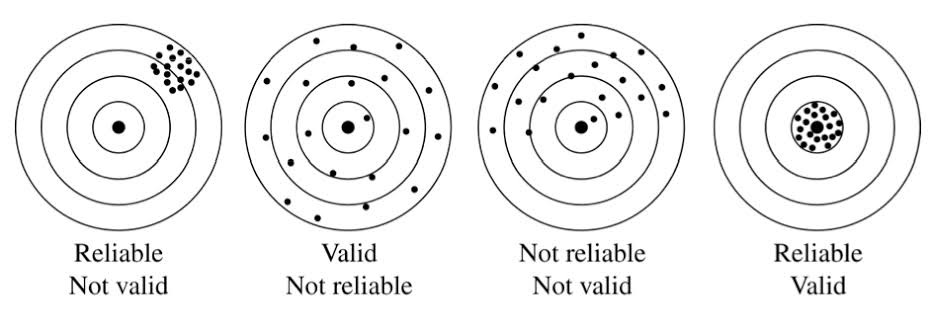
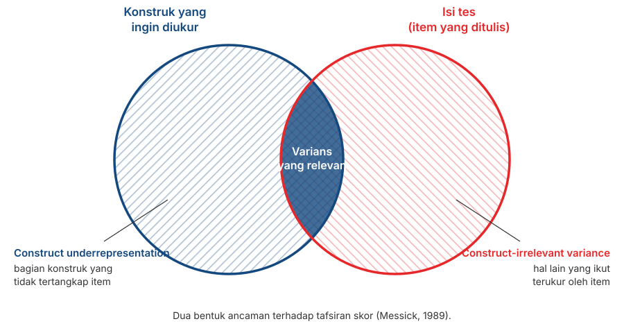

Validitas: Konsep Dasar dan Implementasinya
Penyusunan Skala Psikologi
2026-08-07
Outline
- Kenapa validitas adalah sifat tafsiran atas skor, bukan sifat dari skala
- Bagaimana tiga “jenis validitas” berubah menjadi satu konsep dengan lima sumber bukti
- Lima sumber bukti validitas
- Construct underrepresentation dan construct-irrelevant variance
- Kenapa menaikkan \(\alpha\) terus-menerus justru bisa menurunkan validitas
Dari reliabilitas ke validitas
Yang belum terjawab
Pertemuan 6 memberi kita cara menghitung konsistensi internal: \(\alpha\), \(\omega\), split-half.
Semua koefisien itu menjawab pertanyaan yang sama: apakah skornya stabil?
Tidak satu pun dari koefisien itu menjawab: apakah skornya benar-benar menunjukkan konstruk yang ingin kita ukur?
Note
Ingat analogi timbangan dari Pertemuan 3. Timbangan yang selalu meleset 2 kg bisa internally consistent. Konsistensi internal tidak pernah bisa mendeteksi kesalahan pengukuran yang sistematis.
Ilustrasi yang sering dipakai

Kenapa Ilustrasi ini (sebenarnya) keliru secara faktual
Label “Reliable” dan “Valid” melekat pada papan targetnya, seolah-olah keduanya properti skalanya. Ini kesalahan yang sama seperti menulis “skala ini valid.”
Panel “Valid, Not reliable” juga bermasalah untuk validitas kriteria secara khusus: reliabilitas jadi batas atas bagi koefisien validitas (ingat rumus atenuasi di Pertemuan 3, \(r_{XY} \leq \sqrt{\rho_{XX'} \times \rho_{YY'}}\)). Skor yang tidak konsisten otomatis membatasi seberapa tinggi korelasinya dengan kriteria manapun.
Cara membacanya yang lebih tepat
Sumbu horizontal: konsistensi skor (reliabilitas). Sumbu vertikal: ketepatan skor terhadap apa yang ingin diukur (validitas). Keduanya sifat skor pada suatu penggunaan tertentu, bukan sesuatu yang “dimiliki” atau “tidak dimiliki” oleh instrumennya.
Validitas adalah sifat tafsiran atas skor
Definisi resminya
Validity refers to the degree to which evidence and theory support the interpretations of test scores for proposed uses of tests.
— AERA, APA, & NCME (2014)
Perhatikan subjeknya: yang divalidasi adalah tafsiran atas skor, untuk penggunaan tertentu.
Bukan tesnya. Bukan skalanya. Bukan itemnya.
3️⃣ konsekuensi
Terikat pada tujuan. Skala yang tafsirannya mendukung kesimpulan penelitian belum tentu sesuai untuk seleksi kerja atau penegakan diagnosis.
Terikat pada populasi. Bukti yang dikumpulkan pada mahasiswa tidak otomatis berlaku untuk pekerja pabrik atau anak sekolah.
Tidak pernah selesai. Bukti validitas bisa bertambah, dan bisa juga berkurang ketika muncul temuan yang bertentangan.
Cara menuliskannya
Alih-alih “skala kami valid”, sebaiknya tulis:
“Terdapat bukti yang mendukung tafsiran skor skala X sebagai indikator konstruk Y, pada populasi Z, untuk tujuan W.”
Kalimatnya lebih panjang dan mungkin rumit, tetapi lebih bisa dipertanggungjawabkan secara ilmiah.
Kalimat yang perlu diperbaiki
| Sering ditulis | Sebaiknya |
|---|---|
| “Skala ini valid dan reliabel.” | “Skor skala ini memiliki \(\alpha = \ldots\), dan terdapat bukti isi serta struktur internal yang mendukung tafsirannya sebagai …” |
| “Validitas skala sebesar 0.62.” | “Skor skala berkorelasi 0.62 dengan …, yang mendukung tafsiran …” |
| “Uji validitas sudah dilakukan.” | “Bukti validitas yang kami kumpulkan meliputi … dan …” |
Note
Kolom kiri memperlakukan validitas sebagai sesuatu yang dimiliki alat ukur dan selesai sekali jadi.
Dari 3️⃣ jenis menjadi 1️⃣ konsep
Pembagian lama
Sampai sekitar 1970-an, buku teks membagi validitas menjadi tiga:
- Validitas isi — apakah itemnya mewakili materi yang seharusnya?
- Validitas kriteria — apakah skornya berkorelasi dengan ukuran lain yang relevan, baik saat ini (concurrent) maupun di masa depan (predictive)?
- Validitas konstruk — apakah skornya berperilaku sesuai teori?
Masalah dengan pembagian ini
Ia membuat orang mengira ada tiga aktivitas terpisah untuk menguji validitas. Dalam praktiknya, banyak mahasiswa menuliskan “uji validitas isi sudah dilakukan” lalu kemudian berhenti di situ.
Bagaimana pandangan ini berubah
Cronbach & Meehl (1955) memperkenalkan validitas konstruk dan gagasan nomological network: makna sebuah konstruk terletak pada jaringan hubungannya dengan konstruk lain.
Loevinger (1957) berargumen lebih jauh: validitas konstruk bukan sekedar salah satu jenis validitas, melainkan keseluruhan validitas itu sendiri.
Messick (1989, 1995) menyatukannya: validitas adalah satu penilaian menyeluruh atas sejauh mana bukti dan teori mendukung kesimpulan serta tindakan yang diambil dari skor.
The Standards (2014) menurunkannya menjadi bentuk yang praktis: bukan “jenis validitas”, melainkan sumber-sumber bukti yang semuanya menopang satu tafsiran.
Apa yang berubah secara praktis
Cara lama
“Kami melakukan uji validitas isi, lalu uji validitas konstruk.”
Cara sekarang
“Berikut bukti yang kami kumpulkan untuk mendukung tafsiran skor ini, dan berikut yang belum kami punya.”
Satu argumen validitas yang dibangun dari beberapa sumber.
Tip
Perubahan ini memerlukan transparansi: Anda harus menyebutkan bukti yang belum ada, bukan hanya yang sudah ada.
5️⃣ sumber bukti
Daftarnya
| Sumber bukti | Pertanyaannya | Bisa Anda kerjakan? |
|---|---|---|
| Isi tes | Apakah item mewakili konstruknya? | Ya (TM11) |
| Proses respons | Apakah responden berpikir seperti yang kita bayangkan? | Ya (sebelum TM12) |
| Struktur internal | Apakah struktur item sesuai teori? | Ya (TM13) |
| Hubungan dengan variabel lain | Apakah skornya berperilaku sesuai teori? | Sebagian (TM12) |
| Konsekuensi penggunaan | Apa akibat dari memakai skor ini? | Dibahas di manual (TM14) |
Bukti 1️⃣: isi tes
Pertanyaannya
Apakah item-item yang Anda tulis mewakili keseluruhan konstruk yang Anda maksud?
Untuk bisa menjawabnya, Anda harus lebih dulu punya definisi konstruk yang jelas — apa yang termasuk dan apa yang tidak.
Ini yang akan dilakukan di Pertemuan 9. Tanpa batas konstruk yang jelas, tidak ada cara menilai apakah itemnya mewakili konstruk apa yang ingin diukur.
Dua bentuk ancaman

Underrepresentation vs. irrelevant
Construct underrepresentation — ada bagian konstruk yang tidak tertangkap oleh item Anda. Skala kecemasan yang hanya memuat gejala fisik, tanpa gejala kognitif, adalah salah satu contohnya.
Construct-irrelevant variance — item Anda ikut mengukur hal lain. Soal matematika dengan kalimat panjang dan berbelit ikut mengukur kemampuan membaca.
Cara mengumpulkan buktinya
Minta panel ahli menilai setiap item: seberapa relevan item ini terhadap konstruk yang didefinisikan?
Hitung tingkat kesepakatan mereka. Item yang dinilai tidak relevan, atau yang para penilainya tidak sepakat, ditinjau ulang.
Prosedur bakunya disebut Content Validity Index (Lynn, 1986; Polit & Beck, 2006).
Sudah pernah Anda kerjakan bentuk sederhananya
Di Pertemuan 5 Anda balajar proses penyusunan Thurstone yang melibatkan panel: menilai posisi tiap pernyataan, lalu membuang yang tidak disepakati.
CVI memakai logika yang sama, dengan kriteria yang berbeda.
Bukti 2️⃣: proses respons
Pertanyaannya
Ketika responden menjawab item Anda, apakah mereka benar-benar melakukan proses berpikir yang Anda bayangkan?
Ingat Pertemuan 2: Nisbett & Wilson (1977) menunjukkan bahwa orang sering tidak punya akses pada proses mentalnya sendiri.
Sebuah item bisa terlihat sempurna di atas kertas dan tetap ditafsirkan partisipan dengan cara yang sama sekali berbeda.
Wawancara kognitif (cognitive interviewing)
Minta beberapa calon responden mengisi item Anda sambil mengucapkan apa yang mereka pikirkan (think aloud).
Setelah itu, tanyakan: “Apa maksud pertanyaan ini menurut Anda?” dan “Bagaimana Anda sampai pada jawaban itu?”
Catat kata yang membingungkan, item yang ditafsirkan ganda, dan anchor yang tidak jelas.
Proses ini sangat membantu tetapi sering dilewatkan
Cukup 3 sampai 5 orang sebelum uji coba, dan hampir selalu menemukan masalah yang tidak terlihat oleh penyusunnya sendiri.
Lakukan ini sebelum Pertemuan 12. Biayanya hampir nol, dan hasilnya biasanya menghemat banyak pekerjaan analisis di kemudian hari.
Bukti 3️⃣: struktur internal
Pertanyaannya
Apakah pola hubungan antar-item sesuai dengan struktur konstruk yang Anda teorikan?
Kalau Anda menyatakan konstruk Anda punya tiga aspek, apakah analisis faktornya juga menunjukkan tiga kelompok item?
Kalau Anda menyatakan konstruknya satu dimensi, apakah datanya mendukung itu?
Termasuk di dalamnya
Dimensionalitas — berapa faktor yang muncul, dan apakah itemnya mengelompok sesuai rencana.
Kesetaraan antar-kelompok — apakah struktur itu sama untuk laki-laki dan perempuan, atau untuk kelompok usia yang berbeda. Ini asumsi kelima dari Pertemuan 2.
Konsistensi internal — \(\alpha\) dan \(\omega\) juga termasuk bukti tentang struktur internal, tetapi merupakan bukti yang lemah.
Kenapa \(\alpha\) hanya bukti yang lemah
Pertemuan 6 sudah menunjukkannya dengan angka: \(\alpha = 0{.}62\) pada skala yang jelas-jelas dua dimensi. Satu koefisien tidak bisa menggambarkan struktur.
Bukti 4️⃣: hubungan dengan variabel lain
Dua arah yang harus diperiksa bersama
Konvergen
Skor Anda berkorelasi dengan ukuran lain dari konstruk yang sama atau serupa.
Contoh: skala kecemasan sosial yang baru dikembangkan berkorelasi dengan skala kecemasan sosial yang sudah mapan.
Diskriminan
Skor Anda tidak terlalu berkorelasi dengan konstruk yang seharusnya berbeda.
Contoh: skala kecemasan sosial tidak berkorelasi sangat tinggi dengan skala depresi.
Warning
Bukti konvergen saja tidak cukup. Kalau skala Anda berkorelasi 0.85 dengan semua skala lain, yang Anda ukur mungkin sesuatu yang sangat umum, bukan konstruk yang Anda klaim.
Matriks multitrait-multimethod
Campbell & Fiske (1959) mengusulkan cara memeriksa keduanya sekaligus: ukur beberapa konstruk dengan beberapa metode, lalu bandingkan pola korelasinya.
Intinya: korelasi antara konstruk yang sama diukur dengan metode berbeda harus lebih tinggi daripada korelasi antara konstruk berbeda yang diukur dengan metode sama.
Kalau tidak, yang Anda ukur sebagian besar adalah metodenya, bukan konstruknya.
Note
Ini menjelaskan kenapa dua skala self-report apa pun cenderung berkorelasi: sebagiannya berasal dari kesamaan metode, bukan dari kesamaan konstruk.
Bukti berbasis kriteria
Concurrent — skor berkorelasi dengan kriteria yang diukur pada waktu yang sama.
Predictive — skor memprediksi kriteria di masa depan.
Known-groups — skor membedakan kelompok yang secara teori memang berbeda. Misalnya, skala kecemasan sosial seharusnya memberi skor lebih tinggi pada kelompok yang sedang menjalani terapi untuk keluhan itu.
Yang realistis untuk proyek Anda
Known-groups dan concurrent masih mungkin. Sertakan satu skala yang sudah mapan tetapi pendek di dalam kuesioner uji coba Anda di Pertemuan 12, lalu laporkan korelasinya.
Satu korelasi saja sudah jauh lebih baik daripada tidak ada bukti sama sekali.
Nama konstruk yang sama belum tentu benar-benar sama
Ingat temuan Fried (2017) dari Pertemuan 1: tujuh skala depresi memuat 52 gejala berbeda.
Karena itu, korelasi rendah dengan skala “sejenis” belum tentu berarti skala Anda buruk. Bisa jadi kedua skala memang mengukur hal yang berbeda meski namanya sama.
Yang perlu Anda periksa adalah isi skala pembanding, bukan hanya namanya.
Bukti 5️⃣: konsekuensi penggunaan
Gagasannya
Messick berargumen bahwa akibat dari penggunaan skor juga merupakan bagian dari pertimbangan validitas.
Sebuah tes seleksi yang secara sistematis merugikan kelompok tertentu berarti tesnya bermasalah, meski korelasinya dengan kriteria terlihat baik.
Pertanyaannya: apakah akibat itu berasal dari perbedaan yang sesungguhnya, atau dari construct-irrelevant variance?
Ini bagian yang masih diperdebatkan
Sebagian ahli menilai konsekuensi sosial adalah persoalan kebijakan, bukan persoalan validitas. Anda tidak harus memihak, tetapi Anda perlu tahu bahwa perdebatannya ada.
Untuk manual yang Anda tulis
Di Pertemuan 14 Anda akan menulis manual skala. Manual itu menentukan keputusan apa yang boleh diambil dari skor.
Cantumkan secara eksplisit: untuk keperluan apa skor ini boleh dipakai, dan untuk keperluan apa tidak.
Kalimat seperti “skala ini tidak dimaksudkan untuk penegakan diagnosis atau seleksi kerja” adalah bagian dari klaim validitas.
Pandangan yang berbeda
Keberatan Borsboom
Borsboom, Mellenbergh, & van Heerden (2004) menilai definisi Messick terlalu luas dan mencampurkan terlalu banyak hal.
Menurut mereka, pertanyaan validitas seharusnya jauh lebih sederhana: apakah atribut itu ada, dan apakah variasi pada atribut itu menyebabkan variasi pada skor?
Kalau ya, tesnya valid. Kalau tidak, berarti tidak. Soal kegunaan dan konsekuensi, menurut mereka, adalah pertanyaan yang berbeda.
Kenapa ini kita bahas
Sama seperti kritik Michell di Pertemuan 1: Anda tidak harus setuju. Yang perlu Anda tahu adalah bahwa konsep yang tampak mapan pun masih diperdebatkan oleh para ahli psikometri.
Reliabilitas dan validitas
Batas atas
Dari Pertemuan 3:
\[r_{XY} \leq \sqrt{\rho_{XX'} \times \rho_{YY'}}\]
Reliabilitas skala Anda maupun reliabilitas kriterianya membatasi korelasi yang bisa Anda peroleh dengan kriteria apa pun.
Jadi reliabilitas memang diperlukan.
Tetapi dari sini orang sering menarik kesimpulan yang keliru: bahwa makin tinggi reliabilitas, makin baik validitasnya.
Paradoks atenuasi
Loevinger (1954) menunjukkan bahwa setelah titik tertentu, menaikkan konsistensi internal justru menurunkan validitas.
Alasannya, cara termudah menaikkan \(\alpha\) adalah menulis item yang mirip dan strategi inilah yang membuat validitas menjadi lebih lemah.
Item yang mirip mengukur satu bagian kecil dari konstruk dengan sangat rapat, dan meninggalkan sisanya. Ini berarti terjadi construct underrepresentation.
Contohnya
Sepuluh item skala depresi ini akan menghasilkan \(\alpha\) yang sangat tinggi: “Saya merasa sedih”, “Saya kerap murung”, “Hati saya sering muram”, dan seterusnya.
Skala ini mengukur suasana hati sedih dengan sangat konsisten, tetapi tidak mengukur gangguan tidur, kehilangan minat, rasa bersalah, atau perubahan nafsu makan (yang juga merupakan gejala Depresi) sama sekali.
Kesimpulannya
\(\alpha\) yang tinggi
tidak selalu baik.
Periksalah \(\alpha\) bersama-sama dengan cakupan isi skala. Angka yang sangat tinggi pada skala pendek yang itemnya mirip-mirip perlu diperiksa lebih dulu, bukan langsung dianggap baik.
Rencana uji validitas untuk proyek Anda
Yang realistis dikerjakan semester ini
| Sumber bukti | Kapan | Caranya |
|---|---|---|
| Isi | TM11 | CVI dari panel ahli |
| Proses respons | Sebelum TM12 | Wawancara kognitif, 3–5 orang |
| Struktur internal | TM13 | Analisis faktor + reliabilitas per dimensi |
| Hubungan dengan variabel lain | TM12 | Sertakan satu skala mapan yang pendek |
| Konsekuensi | TM14 | Batasan penggunaan, ditulis di manual |
Diskusi kelompok
Bagian 1: menilai klaim validitas
Diskusikan 15 menit. Untuk tiap klaim: bukti apa yang sebenarnya ditunjukkan, dan bukti apa yang belum ada?
A. “Skala kami valid karena semua item memiliki korelasi item-total di atas 0.30.”
B. “Validitas skala kami terbukti karena berkorelasi 0.88 dengan skala kecemasan yang sudah mapan.”
C. “Skala ini sudah divalidasi pada mahasiswa, jadi bisa dipakai untuk asesmen karyawan.”
Bagian 2: merancang bukti validitas proyek Anda
Sebutkan dua aspek konstruk Anda yang paling berisiko tidak tertangkap oleh item yang sudah Anda bayangkan (construct underrepresentation).
Sebutkan satu hal lain yang mungkin ikut terukur oleh item Anda (construct-irrelevant variance).
Skala mapan mana yang akan Anda sertakan di uji coba sebagai pembanding? Apakah untuk bukti konvergen atau diskriminan?
Untuk keperluan apa skor kelompok Anda tidak boleh dipakai? Tuliskan satu kalimat.
Tip
Jawaban nomor 1 dan 2 akan langsung Anda pakai ketika menyusun kisi-kisi di Pertemuan 10.
Menutup paruh pertama
Yang sudah dipelajari di pertengahan semester ini
- Pengukuran psikologis bersifat tidak langsung, dan definisinya masih diperdebatkan.
- Ada enam asumsi yang kita pakai, sebagian besar tanpa disadari.
- CTT merapikan asumsi ini menjadi \(X = T + E\).
- Format respons menentukan asumsi mana yang Anda pakai.
- Format lain melepaskan asumsi yang berbeda, dengan risikonya masing-masing.
- Reliabilitas bisa dihitung, dan \(\alpha\) punya batas yang jelas.
- Validitas adalah argumen yang dibangun dari beberapa sumber bukti.
Penting diingat
Tujuh kesimpulan ini dapat dirangkum menjadi satu kalimat: Anda perlu tahu asumsi apa yang sedang Anda pakai, dan apa akibatnya kalau asumsi itu salah.
Ujian Tengah Semester
Bentuknya pilihan ganda, mencakup materi Pertemuan 1 sampai 7.
Yang diuji bukan hafalan nama dan tahun, melainkan kemampuan mengenali situasi: koefisien mana yang cocok, asumsi mana yang dilanggar, bukti mana yang sebenarnya ditunjukkan sebuah pernyataan.
Materi paling sering muncul dari: level pengukuran, keenam asumsi, \(X = T + E\), pilihan format respons, tafsiran \(\alpha\) dan \(\omega\), serta lima sumber bukti validitas.
Tip
Cara belajar yang paling sesuai: ambil satu skala apa pun yang Anda temukan, lalu jawab sendiri tujuh pertanyaan sesuai tujuh pertemuan di atas.
Setelah UTS
Pertemuan 9 — kita mulai mengerjakan proyeknya: menetapkan konstruk dan estimand, dari tinjauan pustaka sampai definisi operasional.
Pertemuan 10 — menyusun kisi-kisi dan menulis item.
Pertemuan 11 dan seterusnya — bimbingan langsung bersama Bu Dian, di Ruang 303, dengan hari dan jam yang berbeda. Periksa kembali jadwalnya.
Note
Mulai Pertemuan 9, semua yang kita bahas di paruh pertama berubah menjadi keputusan yang harus Anda ambil sendiri.
Ada pertanyaan❓

Catatan
- Paparan disusun dengan menggunakan dan Quarto dengan template dari UNAIR Theme.
- Kontak saya via amelia.zein@psikologi.unair.ac.id
Rujukan
AERA, APA, & NCME. (2014). Standards for educational and psychological testing. American Educational Research Association.
Borsboom, D., Mellenbergh, G. J., & van Heerden, J. (2004). The concept of validity. Psychological Review, 111(4), 1061–1071.
Campbell, D. T., & Fiske, D. W. (1959). Convergent and discriminant validation by the multitrait-multimethod matrix. Psychological Bulletin, 56(2), 81–105.
Cronbach, L. J., & Meehl, P. E. (1955). Construct validity in psychological tests. Psychological Bulletin, 52(4), 281–302.
DeVellis, R. F., & Thorpe, C. T. (2022). Scale development: Theory and applications (5th ed.). SAGE.
Fried, E. I. (2017). The 52 symptoms of major depression. Journal of Affective Disorders, 208, 191–197.
Loevinger, J. (1954). The attenuation paradox in test theory. Psychological Bulletin, 51(5), 493–504.
Loevinger, J. (1957). Objective tests as instruments of psychological theory. Psychological Reports, 3, 635–694.
Lynn, M. R. (1986). Determination and quantification of content validity. Nursing Research, 35(6), 382–385.
Messick, S. (1989). Validity. In R. L. Linn (Ed.), Educational measurement (3rd ed., pp. 13–103). Macmillan.
Messick, S. (1995). Validity of psychological assessment. American Psychologist, 50(9), 741–749.
Polit, D. F., & Beck, C. T. (2006). The content validity index: Are you sure you know what’s being reported? Research in Nursing & Health, 29(5), 489–497.
Willis, G. B. (2005). Cognitive interviewing: A tool for improving questionnaire design. SAGE.